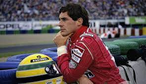
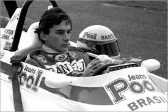
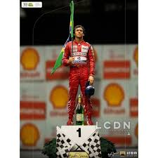

<html>
  <head>
    <meta charset="utf-8">
    <title>Ayrton Senna</title>
	<link rel="stylesheet" href="style/style.css">
  </head>
</html>

<h1>Ayrton Senna</h1>

<p>Ayrton Senna, aussi surnommé « Magic Senna », est l’un des meilleurs pilotes de Formule 1 de tous les temps. Entre 1984 et 1994, il prend part à 161 courses, 
en remporte 41 et monte 80 fois sur le podium. De plus, il détient le record de pole positions (65) de 1989 à 2006, avant d’être dépassé par Schumacher.
 Ses duels mythiques avec Alain Prost resteront gravés dans les mémoires de tous les fans de F1.

Après 3 titres entre 1988 et 1991 avec McLaren, Senna connait 2 années plus difficiles où il se place 4ème et 2ème aux saisons 1992 et 1993. L’année suivante,
 il décide de s’engager avec Williams pour remporter un 4ème titre. 
 Mais à la quatrième course de la saison, Senna est victime d’un accident mortel sur le circuit d’Imola.
 Une mort tragique pour l’un des plus grands pilotes de F1 de l’histoire.</p>
 
  
  
  

  <body background="image/fondnoir.jpg">
  <background-attachment:center center;>